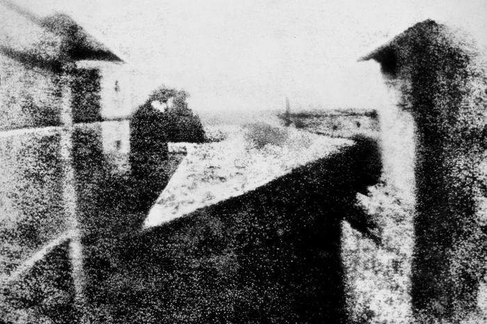

Perbandingan photo zaman dahulu dengan sekarang

foto zaman modern

dari abad ke abad
Sejarah Fotografi dimulai pada abad ke-19. Tahun 1839 merupakan tahun awal kelahiran fotografi. Pada saat itu, di Perancis dinyatakan secara resmi bahwa fotografi adalah sebuah terobosan teknologi. Saat itu, rekaman dua dimensi seperti yang dilihat mata sudah bisa dibuat permanen. Berbagai penelitian dilakukan mulai pada awal abad ke-17 ,seorang ilmuwan berkebangsaan Italia – Angelo Sala menggunakan cahaya matahari untuk merekam serangkaian kata pada pelat chloride perak. Akhirnya, pada tahun 1824, seorang seniman lithography Perancis, Joseph-Nicephore Niepce (1765-1833), Ia melanjutkan percobaannya hingga tahun 1826, inilah yang akhirnya menjadi sejarah awal fotografi yang sebenarnya. Foto yang dihasilkan itu kini disimpan di University of Texas di Austin, AS.